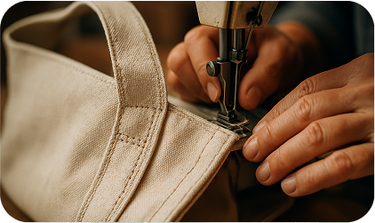
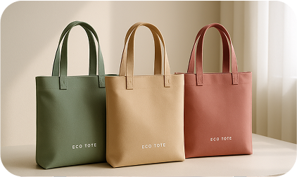

<section class="avantages">
  <div class="container">
      <p class="subtitle">Переваги</p>
      <h2 class="title">Чому обрати нас?</h2>
      <p class="section-description">Наші сумки виготовлені з екологічно чистих матеріалів, що забезпечують стійкість і довговічність. Обираючи EcoTote, ви підтримуєте екологічну відповідальність.</p>
 
    
      <ul class="features-list">
       <li class="features-item">
       
       <h3 class="feature-title">Стійкість та екологічність</h3>
       <p class="feature-text">Виготовлені з органічної бавовни та переробленого пластику.</p>
       </li>
       <li class="features-item">
          
          <h3 class="feature-title">Міцність і довговічність</h3>
          <p class="feature-text">Наші сумки мають посилені шви для тривалого використання.</p>
          </li>
          <li class="features-item">
              
              <h3 class="feature-title">Стильний та сучасний дизайн</h3>
              <p class="feature-text">Мінімалістичні моделі в обмежених серіях для кожного стилю.</p>
              </li>
      </ul>
   </div>
</section>
